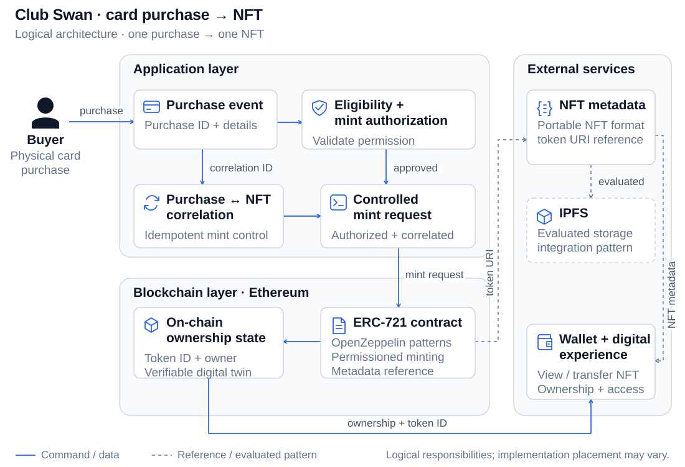
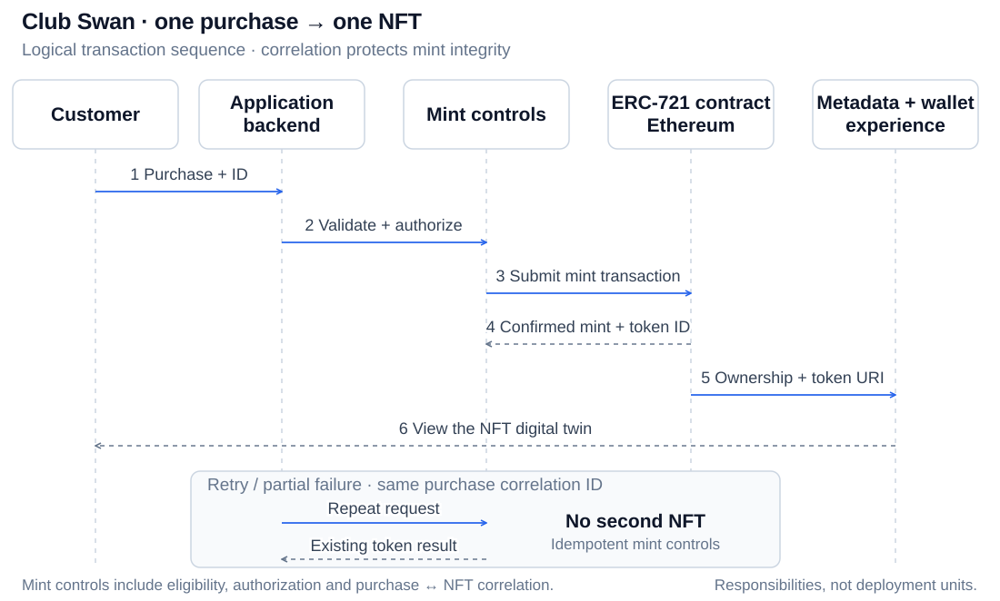
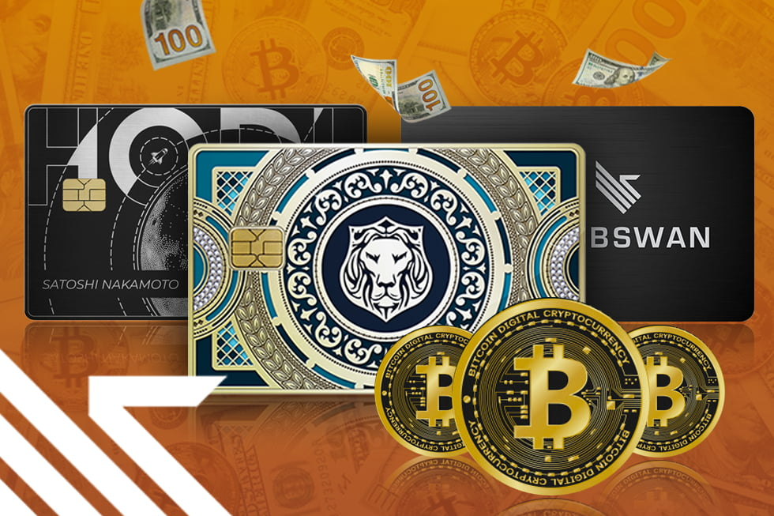

Overview
Designed and delivered a system that minted an ERC-721 NFT as a “digital twin” for each purchased prepaid card, connecting real-world purchases to on-chain proof of ownership and enabling digital-first experiences through verifiable tokenization.

The Problem
A prepaid card purchase needed to trigger a controlled mint request that connected a real-world commercial event to an on-chain asset.
The system needed to validate eligibility and authorization, preserve one purchase → one NFT through retries or partial failures, and provide metadata that could travel across compatible digital experiences.
My Role
Technical Lead + Hands-on Engineer. Co-owned end-to-end architecture decisions, delivery planning, and implementation support across blockchain and application teams.
- Mapped purchase event → mint authorization → on-chain mint → metadata publication, aligning contracts, services, and operational controls.
- Evaluated platforms and tooling, including IPFS, and documented constraints, tradeoffs, and recommended integration patterns.
- Provided PR reviews and implementation support, contributed code when needed, and unblocked issues across smart contract and integration layers.
- Authored architecture documentation, implementation specifications, and workflows to keep delivery consistent and extensible.
- Worked across blockchain, backend, frontend, and QA, translating progress into executive-ready updates and de-risking milestones.
Architecture
The system connects a real-world purchase to controlled mint authorization, an ERC-721 asset on Ethereum, and the customer’s digital experience. The application, blockchain, and external services have distinct responsibilities.
System architecture
Application services authorize the purchase-to-mint flow; Ethereum maintains the ERC-721 asset and its ownership.

Open the SVG to inspect labels, or read the diagram description below.
Diagram description
A physical card purchase generates an event for the application/backend. Eligibility checks and controlled mint authorization connect the purchase to an ERC-721 mint request, with correlation identifiers supporting one purchase → one NFT.
The OpenZeppelin-based ERC-721 contract operates on Ethereum. On-chain mint results, ownership, and metadata references support the customer wallet and digital experience.
Metadata publication supports portability. IPFS is shown as an evaluated storage option, matching the project’s integration research.
One purchase → one NFT
The transaction sequence preserves the purchase-to-token relationship through retries and partial failures.

Open the SVG to inspect labels, or read the diagram description below.
Diagram description
A purchase event and its correlation identifier reach the backend. The system checks eligibility and prior mint state, authorizes a controlled request, and submits the ERC-721 mint transaction on Ethereum.
The resulting token and transaction are correlated with the purchase. Metadata and ownership support the wallet’s digital experience. A repeated purchase event uses the existing mint result rather than creating a second NFT.
Implementation
ERC-721 minting
Implemented ERC-721 minting patterns using OpenZeppelin, with token metadata structured for marketplace interoperability.
Mint integrity
Designed idempotent mint logic and correlation identifiers to preserve one purchase → one NFT under retries or partial failures.
Metadata portability
Evaluated IPFS storage and metadata formats for portability and compatibility with marketplace ingestion requirements.
Authorization boundaries
Considered mint permissions and verification controls to protect the minting process and contract interactions.
Wallet and access foundations
Defined wallet ownership and access assumptions for viewing and transferring NFTs as digital counterparts to physical cards.
Delivery support
Connected architecture documentation, implementation specifications, PR reviews, and cross-functional engineering work.

Video Walkthrough
Outcome
Delivered a production-ready architecture that reliably connected prepaid card purchases to ERC-721 minting, enabling verifiable digital twin ownership and marketplace-compatible metadata.
The design emphasized mint integrity, secure authorization boundaries, and portable storage patterns, providing a foundation that could be extended for future card programs, loyalty experiences, or digital benefits tied to verified ownership.
Lessons Learned
The interesting part wasn’t simply minting an NFT. The harder problem was reliably connecting a real-world commercial event to blockchain infrastructure while keeping the experience understandable and controlled.